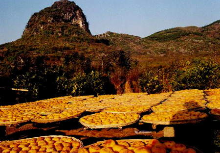
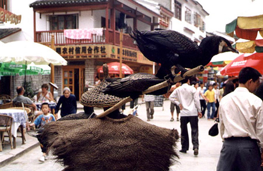
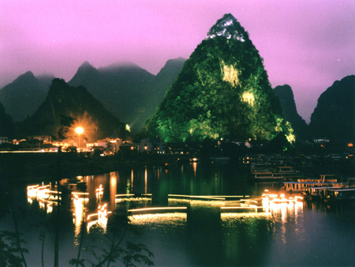

阳朔位于广西东北部，隶属广西桂林市。建县始于隋开皇十年（公元590年），距今已1400余年。全县总面积1428平方公里，人口30万，辖6镇3乡。 “桂林山水甲天下，阳朔堪称甲桂林”高度概括了阳朔的自然风光在世界上所占有的重要位置。“山清、水秀、峰奇、洞巧”为天下四绝。县内旅游资源可分为一环、二带、五景区。阳朔百里山川，处处奇山秀水，自然景观与人文景观交相辉映，被誉为“中国旅游名县”。阳朔是一个制造梦幻的地方，阳朔是单身者的旅游圣地，阳朔是小资们的集中营。

阳朔有沙田柚、金橘、柿饼、板栗等土特产
旅行社桂林阳朔游线——桂林阳朔、古东瀑布双卧五天生态游
第一天：广州乘火车硬卧前往桂林。
宿：火车上。
第二天：抵达后乘车前往有“九级悬瀑”之称的古东瀑布，还可在景区内品尝地道的农家风味，继而参观茶博苑，共同沐浴大自然风光，与采茶姑娘一起享受采茶、制茶、品茶的乐趣，品尝桂林茗茶。然后乘车赴阳朔。
宿：阳朔。
第三天：早餐后乘船游览漓江钻石水道——电影“刘三姐”的拍摄地“刘三姐”水上公园，船行江面，沿途尽情欣赏漓江两岸新景风光。在游江过程中，有妙趣横生的《刘三姐拦路对山歌》等民俗项目，增添情趣。随后游览世界岩溶艺术宝库银子岩，继而前往充满异国情调的阳朔西街，可以购买到你所心仪的物品，品尝当地的特色小吃。
宿：阳朔。
第四天：沿着桂花之路返回桂林，沿途车上观赏刘三姐和阿牛哥定情地大榕树、奇特的月亮山。游览桂林中央公园，观象山水月全景，欣赏榕杉湖景区，观双子塔，游毕乘火车硬卧返广州（晚餐自理）。
宿：火车上。
第五天：抵达广州后结束愉快旅程。
阳朔“自游人”参考行程
第一天：广州——桂林。乘当日18：00的Ｋ36次旅游列车，由广州火车站至桂林，第二天上午7：30到达桂林市区（当晚宿火车卧铺）。
第二天：桂林——阳朔——兴坪早上7：30到达桂林，由专车接送至桂林市区用早餐之后，前往阳朔入住酒店（约1小时车程），建议入住西街帝都酒店，临近漓江而且设施比较好。放下行李后直接前往杨堤（约30分钟车程），在码头坐船游览兴坪——杨堤段漓江。
游完漓江后，如有时间可爬码头隔壁的“老寨山”。乘车回到阳朔西街，晚餐建议品尝西街的乐得法餐厅的法式大餐，这个餐厅的老板文双福是法国人，在非洲当了两年的特种兵，1991年来到阳朔，1993年后就再也没回过法国。
消夜可以选择到阳朔夜市，可以找到几元钱一个炖盅或是大鱼头煲，最大的好处是各取所需，如炖鸡腿、高粱汤圆、牛肉馄饨、大鱼头火锅等都是不错的选择。
第三天：阳朔。早餐建议品尝桂林米粉，或是选择西式早餐，如法式面包或是蘑菇鸡肉蛋卷都是不错的选择。早餐过后可以到西街租单车游览阳朔景点，线路为阳朔——大榕树——月亮山——高田——白沙县（走小路），行程较为辛苦，约六七个小时车程，但这是阳朔田园风光与桂林山水结合得较佳的线路。行程中可自备干粮或是请导游准备农家饭。晚餐建议到西街“玫瑰西餐吧”品尝，这家餐厅是香港人开的。
第四天：阳朔——福利——阳朔。乘车前往福利（或骑单车），租船前往克林顿曾光临过的渔村，这是个保存得较好的阳朔渔村，值得一游。村里出品的沙田柚十分清甜可口。晚餐建议品尝当地著名的啤酒鱼。
第五天：桂林——广州。桂林市内新景点或桂林一日游。由桂林返广州，火车飞机皆可。

地球村－－阳朔西街一景
1 西街小住
走在西街暮色中的石板路上，鞋跟轻轻叩打着路面，你会有一种奇怪的冲动，一种居住的冲动。
来自美国的一位游客说：“西街的建筑奇巧、精细，单这一项就可使你花上好几天时间。”如今在西街，你能看到的外国人比中国人还要多。这条长仅517米的小街，本是最传统的南国小镇街道，石板路面，灰砖骑楼；可它又是最洋气的：几乎所有的招牌都是英文，小街上至少有近10家商店有 “Ｉｎｔｅｒｎｅｔ”、“Ｅ－Ｍａｉｌ”服务，店里有多媒体电脑－－这台电脑很可能就放在一张油漆剥落的农家方桌上。西街上几乎只有三种商店，咖啡店、Ｔ恤店、工艺品店。所以来阳朔，你不能不来西街。
20世纪80年代，西方一本被背包旅行者奉为“圣经”的《孤独行星》里面介绍了阳朔西街独特的风情。渐渐地，这里便成了国外背包旅行者的聚集地。随着外国游人的增多，一些迷恋西街风土人情的老外干脆在这里“安营扎寨”，开起了旅馆、饭馆。
住在西街的人或三三两两，或独自一人在不同的吧坐着，点一杯ｃａｐｃｈｉｎｏ，或是要一瓶酒边喝边看电影，要不就静静地坐着也很闲适。在阳朔泡吧的人多数不会拘束，所以当有人邀请你喝杯酒或是加入他们的谈话没有拒绝的必要。吧里还有书，如果想一个人安静也可以看看书。
西街每户民居和店面的背后，你都能找到一些传说，比如有“西街毕加索”称呼的林栋，比如每晚只生产三只烤鸡或三条烤鱼的“阳朔第一烧” 周汝云。
西街就像一个宝藏，你会发现你有越来越多的朋友，听到越来越多的故事，每天你的眼里会是不同的西街，不同的阳朔。
2 单车漫游
到了阳朔，让自行车奔驰在风光交织的乡间小路上，嗅着青山绿水中的乡野气息，深呼吸一口大自然最清甜的空气，一路闻鸟语花香，一路尽欢声笑语。
阳朔街头有众多的自行车出租档口，而且出租的单、双人座自行车皆有。阴朔自行车旅游线路成熟的有10条，比较经典的一条线路是：早餐后，骑自行车出发观赏阳朔陆地风光并前往遇龙河。遇龙河也称“小漓江”，此地非常适合徒步，河边山水如诗如画，漫步乡间的阡陌小道，走走停停，一路享受徒步的快感，自在的喜悦以及骑自行车的悠闲乐趣。随后再骑车前往与大榕树相隔不远的月亮山，登上山顶，游客可以俯瞰阳朔全景，登高望阳朔山水，别有一番风味，之后骑车返回阳朔。午餐后，从阳朔出发沿桂花之路前往广西少数民族集中地区——龙胜各族自治县，先到银水侗寨去听一听被誉为“上帝音符”的千年大歌；去看一看中国古代四大桥梁建筑之一的风雨桥。还有年轻寨主为您诉说侗族沧桑历史。随后泡泡龙胜矮岭温泉，沿途还可见到广西“八山一水一分田”的奇妙佳景。
3 攀岩斗勇
阳朔是世界攀岩爱好者的圣地，因为阳朔是喀斯特岩溶地貌特别发育的区域，这里有成千上万拔地而起的奇峰怪岩，也造就了成千上万条可以攀爬的路线。
阳朔一般向游客开放的比较简单的攀岩线路有：月亮山（上月亮山前得在景区门口买票，攀岩场地在山顶，有一石砌小道直通山顶，需走二三十分钟。月亮山是阳朔最早，也是最具吸引力和有特色的自然攀岩场）、大榕树（大榕树比月亮山要近一些，离县城约6公里，也为阳朔一著名景点。路线所在的岩壁在景点以西，穿过一村庄即到）、铜门山（位于遇龙河边，从大榕树向遇龙河上游方向步行约20分钟）、拇指峰（此峰位于金猫洞和大榕树之间的公路边，离县城约5公里）、金猫洞（此处紧靠公路，离县城约4公里。那里有5条打好膨胀锥的路线，适合初学者）。
导游带我们去的是蝴蝶泉附近的攀岩线路，据说这是阳朔最具挑战性的线路之一。
4 徒步行走
徒步漓江，从阳朔漓江杨堤码头出发，到达兴坪，十几公里的路程，5－6小时基本可以完成，这样零距离接触漓江山水，感受自然非同一般。
阳朔徒步漓江的线路有5条，比较成熟经典的一条是，杨堤——望夫山——九马画山——冷风渡——兴坪古镇，徒步的时候一定不要只顾着埋头走路，而应该极力张望，张望这画家笔下最爱的景致，可以伴随着想像刘三姐的歌声。这条路线有三个地方一定不要错过，一是九马画山。这是漓江有名的景点，传说是人在这里看出的马匹越多那么你就越厉害，据说周总理当年就看出了九匹骏马；一是找寻新版人民币20元的背面的那段漓江风景。就在距离兴坪古镇不远，一个名叫黄布倒影的地方。这黄布倒影美到什么程度，我形容一下，层层叠叠青翠的山峰倒映在一江春水中，若有若无的水雾笼罩着在春风中轻轻摇曳的竹林，一叶竹筏老是飘荡在江中；一是兴坪古镇。兴坪很小，老街是石板路、老房子，新街是水泥路、新房子，有很多小吃摊和两三家旅馆。
走完可以在兴坪住上一晚，第二天有体力和兴致的话再走回阳朔，这又是一条道路了。兴坪镇西侧临江，有码头，通向码头的路南有一个陡峭高耸的近200米的石山，有小路可以上到观景亭，爬上去还得小小的费一下力。再往南是螺蛳山，江的对面就是因克林顿来访而出名的渔村。从渔村绕到龙头山就可以望见阳朔了。
5 遍赏民情
阳朔居有汉、壮、瑶、苗等11个民族，各民族除有自己的习俗、节日外，一个共同的特点便是擅长对山歌。其中尤以壮乡高田的中秋节对歌、福利龙尾瑶民的“歌堂愿会”最富特色。从阳朔出发，往桂林方向16公里处，有一个地方叫石头城，这石头城其实是个村庄，因村庄外的一堵石头城墙而得名。岁月的沧桑，将这个城墙雕刻得很有历史感。石头城里村民的房子基本上都是用石头盖的，屋顶的瓦都是石块来完成，屋子藏在树阴里，与自然融为一体。
兴坪的老屋也一定要仔细观察，你随随便便就能发现一条街的老房子，看外形就知道都是几百年的老东西了，从斑驳腐朽的木质和长满青苔的青黑的瓦片上透露出过去岁月的流逝。
兴坪渔村是绝对要去的。那可是克林顿青睐的地方。渔村是古老东方农耕文明的缩影，坐落于距阳朔兴坪古镇约1.5公里的漓江边，是典型的华夏岭南文化古村，已有近500年历史。
村子有至今保存完好的传统民居48座，青砖黑瓦，坡屋面、马头墙，飞檐画栋雕花窗，具有典型的中国明清时期桂北民居特色。村前漓江环绕，如悠悠玉带青罗。
想住在农家的话，建议找一个漓江边或者是遇龙河边的住所，吃过丰盛的农家晚餐，端上一杯茶，坐到丝瓜藤下，静静地听着河水在前方两百米的地方平静而欢快地流着，空气中弥漫着柚子的清香，心情是晃晃悠悠的轻松。农家的夜静谧安祥，面对黝黑的一切，你仿佛能听见树叶的窃窃私语，水边竹林里的竹笋们在欢快地成长。
距离阳朔县城不远有个叫“世外桃源”的景点，是体会阳朔民俗民风的不错地方，你既可以坐船穿过桃源洞后，找到与世几乎隔绝的小村庄，据说村庄里的人十分长寿，不过游客最好不要去打扰它的宁静；还可以发现一群来自中缅边境的土人部落，甚至阳朔主要少数民族壮、瑶、苗等民族的风俗以及特殊技艺也能在这里找到。

夜游漓江
6 夜游漓江
夜游漓江更别有一番风味。夜里乘船从桂林至阳朔，暮色中奇峰夹岸，碧水莺回，江中渔火，夹岸舍灯，星星点点，诗意盎然。
尤其是后者，晚饭后在阳朔码头上船，可容10人左右的中等机船，25元／人。开出几公里，然后来回在漓江上游弋，会有一到两叶小竹排表演鱼鹰捕鱼，游船侧开一盏小灯照明，江水清浅，可以清晰看到鱼鹰在水底潜游的景象，热爱大自然生命的人不容错过。看完表演后，游船停在一个浅滩上，渔公、鱼鹰均可让人照相留念。
漓江水清潭深鱼多，渔民一年四季收获丰裕。每年的10月30日，阳朔都将举办渔火节，在杨堤月光岛旁，在兴坪榕树潭中，在县城白沙湾处，在月亮山潘庄脚下，每当夜色朦胧，远山近岫仅存剪影，一只只燃着渔灯的竹筏便漂在江上，鸬鹚在渔人“鱼、鱼、鱼”的号令下，不断地在水面、水下翻飞、捕鱼，或三五小时，或通宵达旦，渔人总是要满载而归的。
我还建议大家别忘记欣赏阳朔的日落，那是我所见过的最美丽的日落，也是阳朔山水最美丽的时刻之一。
7 外语进修
阳朔每年的外国游客的数量是当地居民的十倍还多，所以很多人认为，阳朔是治“哑巴英语”、“聋子英语”的好去处。
有人说，西街是全中国最大的外语角。在这里，很多时候说英语的人比说汉语的人多，除了英语，还有人说法语、瑞典语、丹麦语。西街上每间店铺的主人，每个咖啡馆的服务员，都习惯了用英语招待客人。而这一切，都离不开一个名叫欧文的人，一个和我所钟爱的球星同名同姓的人。欧文在阳朔创立了很多个第一：第一个ＩＤＤ（国际长途直拨）使用者，第一个ＦＡＸ（传真）使用者，第一个上网、开网吧的人，第一个ＰＣ（电脑）培训者，第一个开办外国语学校的人，第一个招聘外国人当义务外语教师的人，第一个招收外国留学生的人，第一个开办英文书院的人，第一个引进外国公司ＡＷＣ来阳朔落户的人，第一个获得英国剑桥大学认证的人，第一个获得教育部认证的阳朔外语学校办学者，第一个开展世界流行的ＫＡＹＡＫ（独木舟）运动的人，第一个与海外联合办学的人。我见到他的时候，他还在忙着好几件事：组织国外的留学生，建立起全国的志愿者网络，帮助那些需要英语交流的人。去阳朔3个月，保证开口说英语，虽然不乏夸张，但确也可行。
8 顺水而行
码头前有两三家饭店，吃完后，跟老板娘商量，说要去兴坪，她会安排用机动小船来接你们游览，这种小船最多只能坐四人，最好坐两人。
山和水是阳朔的精华，阳朔的水路游览线在我看来，可以分成两个部分，一是传统的桂林——阳朔杨堤——阳朔兴坪，这条线路是当年美国总统以及周恩来、邓小平等党和国家领导人的游览路线，我因为是直接到阳朔的，所以走的只有阳朔杨堤——阳朔兴坪段，来回约3个多小时，票价约100元。我们坐的是稍大的船，顶上有钢板的那种，好处是我们自始至终都呆在船顶钢板上，或趴或坐或躺或站，视野略无碍滞，漓江秀色尽在四周，江岸鸟啼牛戏，小孩子水边玩耍，令人有出世之想。
水路游览线的第二个部分是竹筏漂流，竹筏漂流是在遇龙河进行的。遇龙河是指白沙世外桃源至大榕树工农桥段，长约16公里，宽38—61 米，深0.5—2米，常年水质清澈，水流缓缓。
遇龙河漂流不同一般漂流的地方在于它不是激流勇进式的，而是平静的漂流，漂流的主要目的不是刺激，而是躺在竹筏上的躺椅上享受宁静的河流，享受牧歌般的田园，享受时间似乎停滞了的感觉，只偶尔冲下小水坝，让你平静中也有欢笑。
这种平静的漂流有利于你观赏阳朔的山水，遇龙河两岸山峰清秀迤逦，连绵起伏，形态万千，江岸绿草如茵，翠竹葱郁，树木繁荫。遇龙河的水清澈透亮，鱼儿闲游，水筏飘摇，一一可见。微风拂过水面，泛起阵阵涟漪，立于江岸之上，任清风拂面，一切烦扰便会释然，随之而来的平静、豁达，心里得到一种惬意的慰藉。
遇龙河的田园风光也堪称一绝。河岸两侧，田畴平整开阔，绿意逼人，稻花飘香。这景致和感觉，是在山水甲天下的漓江也找不到的。
漂流的工人很有意思，他会跟你一边划，一边讲述一些传说故事，我还记得关于遇龙河的来历，他是这么说的：很久以前，东海有一条龙，巡游到此，看到如此胜景，觉得东海黯然失色，便潜藏下来不走了。这条龙晚上浮出水面贪婪地观赏美好的风光，后来忍不住有时白天也偷着出来，许多村民都曾见过，遇龙河因此得名。
注：该线路十分抢手，如果是在“五一”和“十一”期间去遇龙河漂流，一定要记得预定。